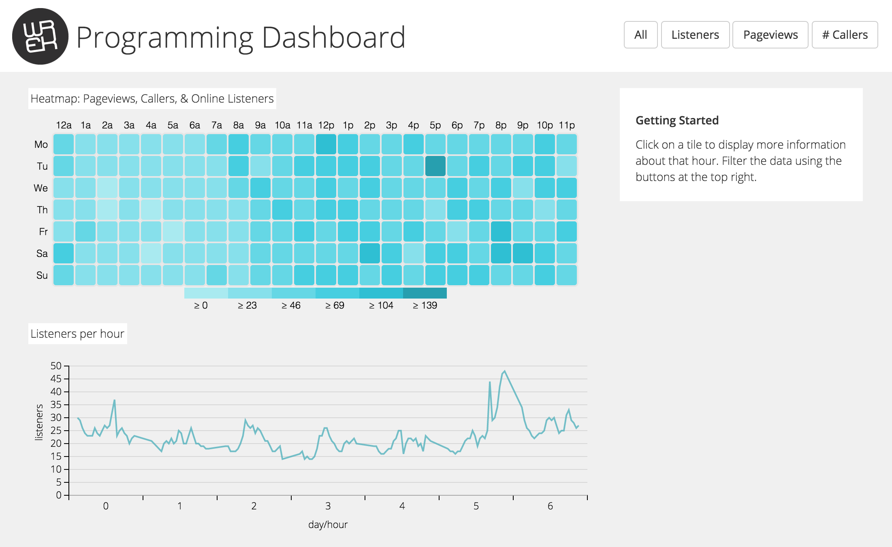
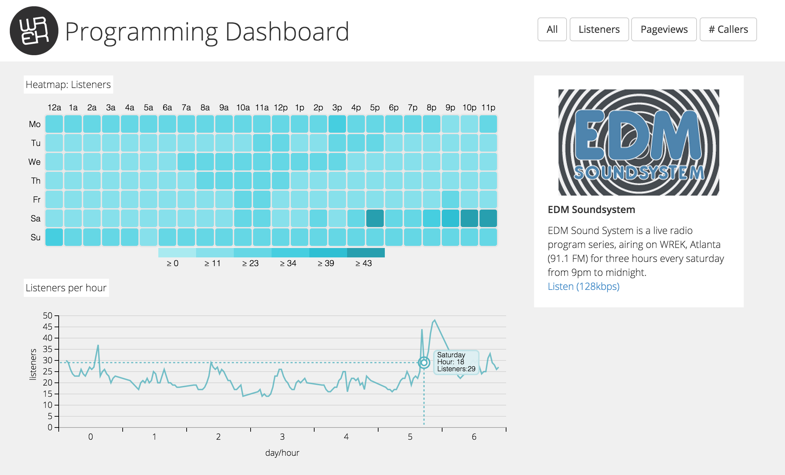

Programming Dashboard
For this project, I worked with the Webmaster of WREK Atlanta to create a dashboard for our Programming Director. My responsibility for this project was to work on the initial design while the Webmaster coded it. One of the most important parts of this info viz was to allow the user a decent amount of interaction. This interaction is provided by the ability to filter data.
It can be viewed
here.

